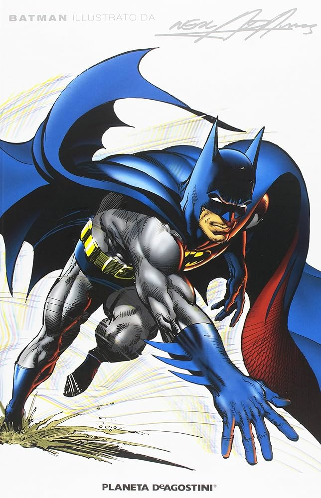
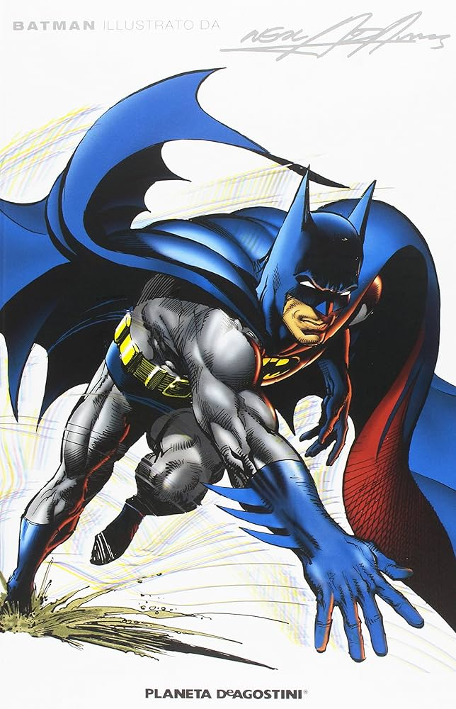

Listo
Entrada de Hallazgos
Informe Final
El informe generado aparecerá aquí...
Listo
 

Categorizando hallazgos...
Generando informe completo...
Las claves (texto incorrecto) se guardan en minúsculas.